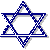

WORK IN PROGRESS: The work of our hands: Sign Language interpreting in Jewish settings [Ashkenaz]
Jewish signs an educated interpreter should know
Brit Milah (The circumcision ritual)
Chatunah & Shevah Brachot (Marriage ceremony)
Interpreting for Hebrew as a second language
Rosh haShannah (Jewish New Year)
To see what's on the Web about Bar/Bat Mitzvah, see Resources for religious/spiritual interpreting: Judaism - Bar/Bat Mitzvah.
A Bar/Bat Mitzvah usually happens on Shabbat, so read the section on Shabbat if you haven't already done so, and print out Shacharit and Mussaf for Shabbat. Find out what the bar/bat mitzvah (young person) will read: it may be all or part of the Torah reading or perhaps the Haftarah (a selection usually from the prophetic writings). Work on a translation of this. Interpreting it from a written English translation is very awkward. Some will lead part of the prayer service. If the young person is Deaf, will s/he sign the reading or say it in Hebrew? Even if the young person is hearing, since her/his performance is the focus of the event you will want to be able to interpret this, which is easier if you write yourself a gloss script.
If it is an Orthodox Bat Mitzvah, the woman will give a speech. You should get a copy of it or at least an outline to facilitate interpreting it, since it may contain Hebrew and the young woman if nervous may say it very softly or quickly, making understanding it difficult. At least with the Bar-Mitzvah you have a standard script that the young man is following. If the Bat Mitzvah is not Orthodox, she may do some of the options that were traditional only for the young man, which are dealt with above.
It is incumbent upon an observant Jew to say blessings on various occasions. One of these is upon eating. There is a blessing before and after consuming food. The Chochamim (Rabbis of the Talmudic period) codified the wordings of these and determined that if bread is included in the meal the most complete series of blessings must be said afterwards. Generally an interpreter will not be present at a meal, but the two most likely times s/he will, are for a chatunah (wedding) and at a Pesach seder (Passover ritualized meal).
To see what's on the Web about Brit Milah, see Resources for religious/spiritual interpreting: Judaism - Brit Milah.
A brit does not necessarily happen on Shabbat. If it does, then you will need to read the section on Shabbat below. Aside from reading the ASL translation that I have in the link above, it is good to consult with the mohel who will perform the brit as to which portions of the text he will actually use. Everyone will want to know the name of the baby as it is announced but if the couple follows the Orthodox tradition, you will not be allowed to know the baby's name before that, which would help you know how to spell it. Warn the mohel that you may need to ask for a repetition of the name after it is announced, and if you still don't get it, then ask for someone to write it out afterwards [unless it is on Shabbat or Yom Tov (one of the holidays)]. It is also vital that you stay afterwards to interpret any speeches, help with social interactions between hearing and Deaf people, and if the mother or father is Deaf to interpret the post-brit care of the baby's penis as explained by the mohel to the parents. A brit is occasionally postponed because of the appearance of jaundice or other medical conditions that counterindicate circumcision, so it is best if you are flexible with your interpreting schedule, since with proper preparation you are more qualified than other interpreters to handle the situation.
Brit milah (Circumcision) service
To see what's on the Web more about Chatunah, see Resources for religious/spiritual interpreting: Judaism - Chatunah.
The service for a Jewish wedding is relatively short. It is not traditional for there to be singing in the wedding ceremony itself, but if this will be added it may well be in Hebrew, so you will want to get a translation of anything that might be sung. At the wedding feast, the blessing after meals is sung aloud as well as the Sheva Brachot (Seven blessings) that are added. For up to seven days these blessings may be repeated at special meals that are served in honor of the chatan and kallah (bride and groom). Be available for any speeches that are made at the reception and prepare with the speakers if you can. Be sure to discuss interpreter placement at the ceremony with the bride and groom, as some people get especially nervous about attention being diverted from the wedding party.
Chatunah & Shevah Brahot (Marriage service)
To see what's on the Web about conversion, see Resources for religious/spiritual interpreting: Judaism - Conversion.
Conversion is a lengthy process. You might be called upon to interpret for conversion classes, where the potential convert learns about Judaism. The conversion ceremony is short, with a single blessing recited before the convert immerses him/herself in a mikveh (baptismal pool). Since the convert will not have clothes on in the mikveh, one can only interpret for one's own gender. The blessing is WE PRAISE ADONAI, OUR GOD, RULE UNIVERSE. WHY? YOU MAKE US PURE THROUGH YOUR COMMANDMENT, AND COMMAND SOME BECOME JEWISH.
To see what's on the Web about funerals and mourning, see Resources for religious/spiritual interpreting: Judaism - Funerals and mourning.
Funeral services vary a great deal, but one possible services is translated in the link above. Find out what the service will be, but if you can't you can simply follow the script I have provided and repeat it or cut it short as the ceremony dictates. You will need to go to the cemetery as part of the service.
To see what's on the Web about Nisan & Pesach (Passover), see Resources for religious/spiritual interpreting: Judaism - Nisan & Pesach (Passover).
As we mentioned above, during the holidays, Orthodox people do not turn lights on and off, handle money, or write, so do not do so in the company of others as a respect for tradition. Do not present your bill at those times either because business transactions do not happen then. Conservative and Reform are less stringent, but it's best to avoid these actions in those settings too. Do no bring food to a seder unless you know that it is kosher for Passover. Regular kosher is not enough. If you will be at a seder and don't drink wine, you can ask them to provide you with grape juice, which Jewish people usually have on hand.
To see what's on the Web about Rosh haShannah and Yom Kippur (Jewish New Year and the Day of Atonement), see Resources for religious/spiritual interpreting: Judaism - Rosh Hashana & Yom Kippur.
The work of our hands: The High Holidays (Rosh Hashana and Yom Kippur)
Traditional (Orthodox & Conservative)
Reform
To see what's on the Web about Shabbat (The Sabbath), see Resources for religious/spiritual interpreting: Judaism - Shabbat (The Sabbath).
The work of our hands: Shabbat
Traditional (Orthodox & Conservative)
Kabbalat Shabbat and Maariv [Evening Service]
Reform
To see what's on the Web about Rosh haShannah and Yom Kippur (Jewish New Year and the Day of Atonement), see Resources for religious/spiritual interpreting: Judaism - Rosh Hashana & Yom Kippur.
The work of our hands: The High Holidays (Rosh Hashana and Yom Kippur)
Traditional (Orthodox & Conservative)
Reform